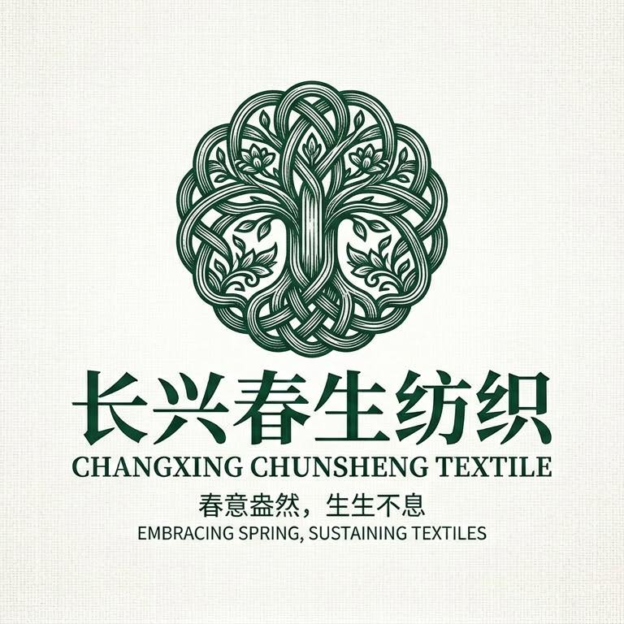
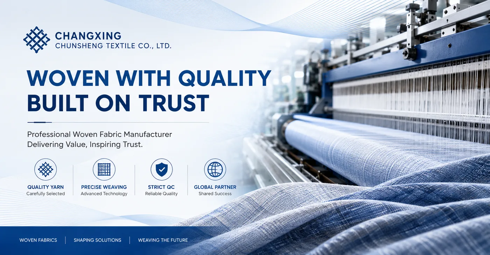
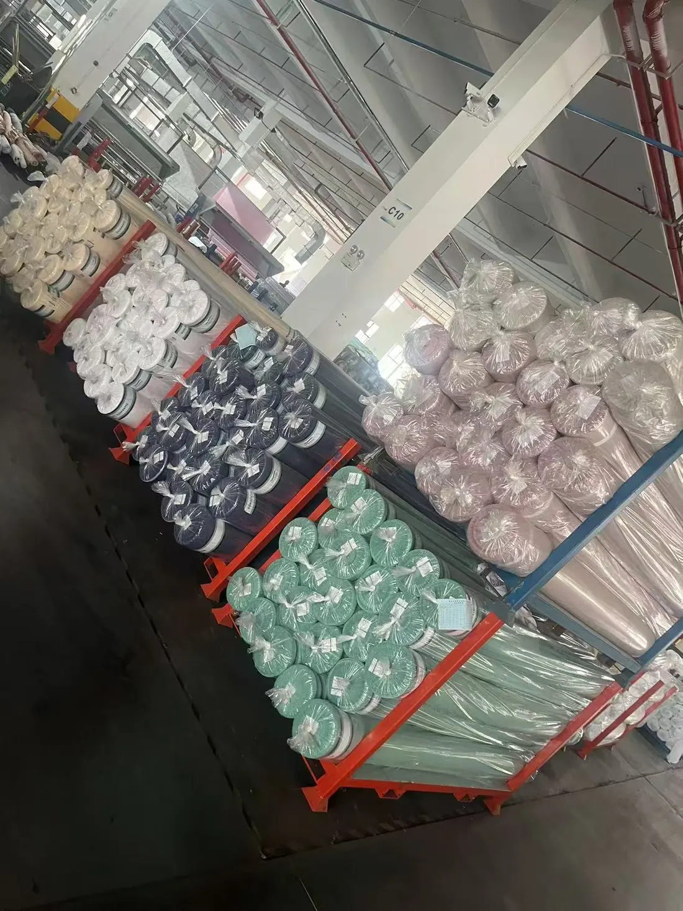
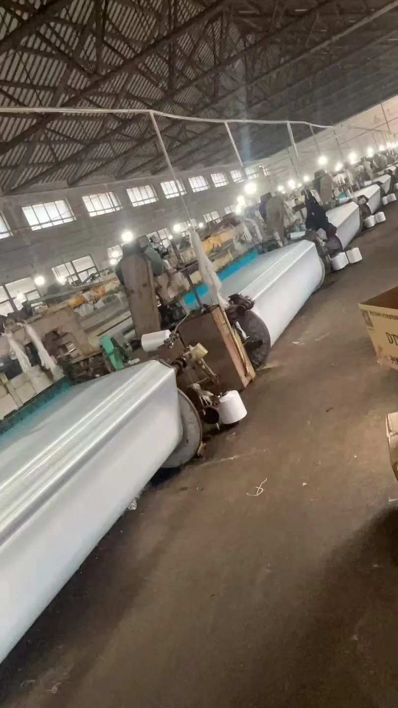
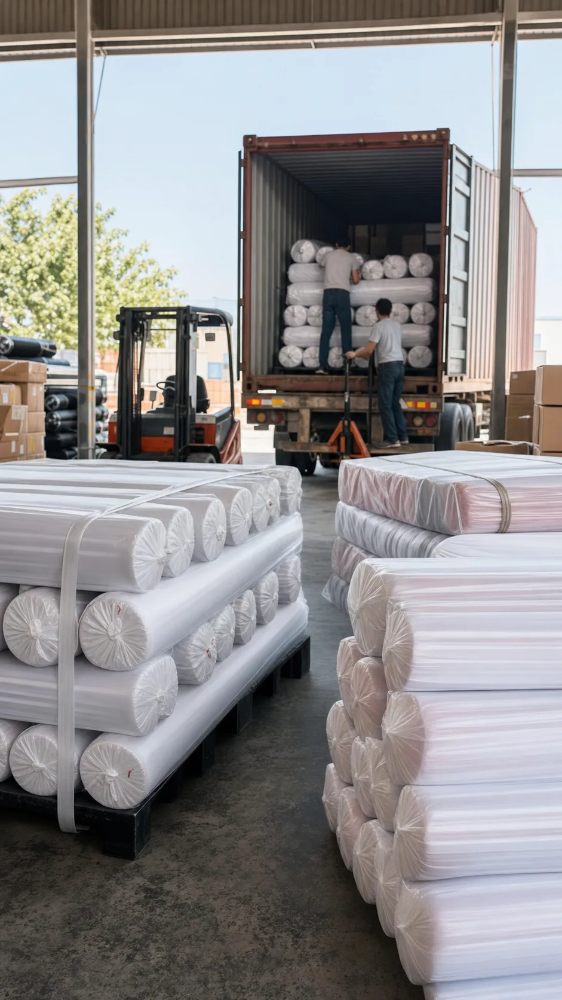
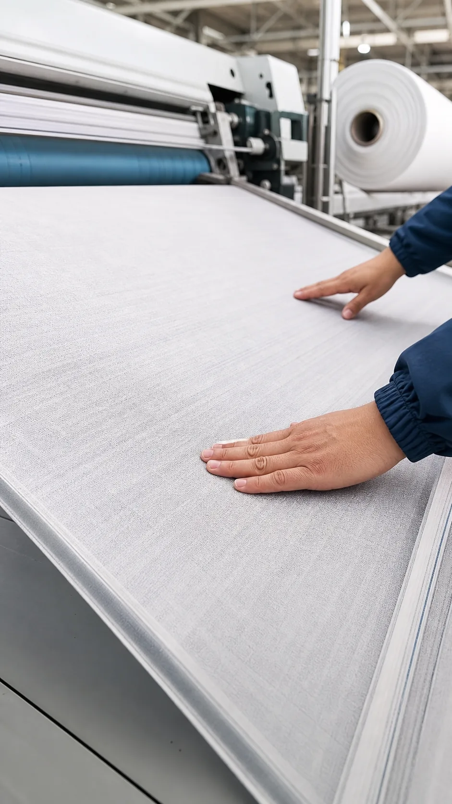

Wide-width and long-roll woven supply
Suitable for buyers who need stable woven fabric supply by width, roll length, weight, finish and packing method.

Changxing Chunsheng Textile Woven fabric manufacturer
Fabric sourcing request
Source wide-width, long-roll woven fabrics from Changxing, Zhejiang. We focus on practical factory pricing for pongee, peach skin, oxford and brushed fabrics, with thermochromic, flame-retardant and recycled material customization by specification.
Factory-direct advantages
The main advantage is practical pricing from a woven fabric source factory. Buyers can discuss wide-width, long-roll supply and special functions after confirming specification, application and order quantity.
Suitable for buyers who need stable woven fabric supply by width, roll length, weight, finish and packing method.
Cost control is a key strength. Pricing is discussed around real specification, quantity, packing and FOB or CIF term.
Special effects and protective finishes can be reviewed by sample target, use case, testing requirement and order volume.
Green material routes can be discussed for buyers needing recycled polyester, recyclable fabric direction or sustainability-focused programs.
Fabric range
The site uses the supplied product images only. Specifications can be quoted by weight, width, density, finish, color and packing method after receiving the buyer's target sample or tech sheet.
Lightweight woven fabric for linings, outdoor wear, home textile and promotional products.
春亚纺 View pongee detailsSoft hand-feel woven fabric for apparel, bedding and decorative textile applications.
桃皮绒 View peach skin detailsDurable fabric option for bags, covers, storage products and utility textile goods.
牛津布 View oxford detailsRaised surface fabric for warmer touch, suitable for home textile and garment programs.
磨毛布 View brushed fabric detailsSourcing by application
Many buyers do not start from a fabric name. They start from the product they are making. These application entries connect common end uses with practical woven fabric directions.
Polyester pongee and peach skin are common discussion routes when buyers need light woven bases, soft hand feel or finishing options.
Explore pongee fabricOxford fabric inquiries usually need denier, coating, water-repellent requirement, color, roll packing and final application.
Explore oxford fabricPeach skin and brushed fabric discussions focus on hand feel, surface effect, shade, width, weight and packing before sampling.
Explore peach skin fabricFor custom orders, buyers should confirm color standard, finish route, labels, marks and FOB or CIF destination details early.
Send a specificationSource factory evidence
Buyers do not need decorative claims. They need traceable company information, visible production conditions and clear sampling communication. This page presents supplied factory material plainly, so the sourcing discussion starts from evidence.




Factory media
Short clips from the material folder are embedded to make the factory presence visible before a buyer schedules a call or asks for updated footage.
Company profile
The public-facing profile keeps the factory identity, location and product scope concise for buyer review.
Buyer support
Share your target fabric, usage and shipment term. The discussion can stay focused on specification, sample confirmation, packing details and export communication.
FOB or CIF quotation can be discussed after confirming width, weight, finish, quantity, packing and port.
Color, hand feel, surface effect and finishing route should be approved before bulk production.
Roll packing, labels, marks and pre-shipment photos can be discussed for order follow-up.
Invoice, packing list, destination port and shipping document requirements should be confirmed in advance.
Better inquiry, faster quotation
Product name alone is rarely enough for accurate fabric sourcing. A clear inquiry helps the factory review the route, sampling feasibility, packing method and trade term faster.
Sourcing workflow
Share construction, weight, width, color, finish, end use or a physical reference sample.
The factory checks available fabric routes and confirms practical production details.
Sampling focuses on hand feel, shade, surface effect and packing requirements.
Bulk orders are followed through weaving or finishing, inspection and roll packing.
Buyer FAQ & sourcing cases
These examples show the exact information buyers can send for pongee, peach skin, oxford and brushed fabric quotation, including FOB or CIF discussion points.
Changxing Chunsheng Textile Co., Ltd. is located in Changxing County, Huzhou, Zhejiang, China. The site presents company facts, workshop photos and short factory videos for buyer review.
Common inquiry products include polyester pongee, peach skin fabric, oxford fabric, brushed fabric and other woven textile fabrics.
Please send width, weight, construction, color, finish, quantity, packing method, destination port and target application. Photos or reference samples are also useful.
Yes. For FOB, share the China loading port preference if any. For CIF, please provide the destination port so ocean freight and insurance can be considered in the quote.
Sample discussion normally starts from the target specification or reference fabric. Sampling focuses on hand feel, shade, surface effect, finish and packing requirements.
Roll packing, labels, shipping marks, carton or pallet requirements should be confirmed before production. Export documents can be discussed according to the buyer's destination requirements.
Yes. Competitive factory-direct pricing is discussed after confirming width, weight, finish, color, quantity, packing and FOB or CIF delivery term.
These custom routes can be reviewed according to the target application, sample requirement, testing need and order quantity. Buyers can send a reference sample or specification first.
A buyer may send 190T or 210T pongee reference, required width, color, coating or water-repellent finish, order quantity and destination port. The factory can review whether the request should be quoted as FOB China port or CIF destination port.
For bag or cover fabric, buyers usually confirm denier, coating, water-repellent finish, color, roll packing and final application. These details help avoid quoting only by product name.
For bedding, home textile or decorative fabric, buyers should confirm hand feel, width, weight, color or print design, surface finish and packing requirements before sampling.
For brushed fabric, buyers can share the target hand feel, brushing level, color, width, weight and end use. A physical sample or clear photo can help confirm the fabric direction faster.